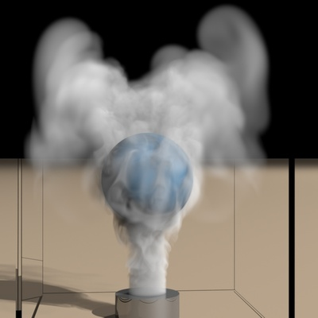

|

|
|
Abstract:
We introduce a new method for fluid simulation on high-resolution adaptive grids which rivals the throughput and parallelism potential of methods based on uniform grids. Our enabling contribution is SPGrid, a new data structure for compact storage and efficient stream processing of sparsely populated uniform Cartesian grids. SPGrid leverages the extensive hardware acceleration mechanisms inherent in the x86 Virtual Memory Management system to deliver sequential and stencil access bandwidth comparable to dense uniform grids. Second, we eschew tree-based adaptive data structures in favor of storing simulation variables in a pyramid of sparsely populated uniform grids, thus avoiding the cost of indirect memory access associated with pointer-based representations. We show how the costliest algorithmic kernels of fluid simulation can be implemented as a composition of two kernel types: (a) stencil operations on a single sparse uniform grid, and (b) structured data transfers between adjacent levels of resolution, even when modeling non-graded octrees. Finally, we demonstrate an adaptive multigrid-preconditioned Conjugate Gradient solver that achieves resolution-independent convergence rates while admitting a lightweight implementation with a modest memory footprint. Our method is complemented by a new interpolation scheme that reduces dissipative effects and simplifies dynamic grid adaptation. We demonstrate the efficacy of our method in end-to-end simulations of smoke flow.
|

![[PHOTO]](../../images/knight_small.png)